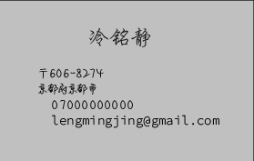

インライン要素の寄せ
インラインの要素(displayプロパティがinlineの要素)は親要素のtext-alignプロパティの値によって左右中央の配置をコントロールできる。
左に寄せたい場合は
text-align: left;
ここは左寄せに設定しています。
もともとは左寄せになっているので指定しなくても良い場合が多い.
もともとは左寄せになっているので指定しなくても良い場合が多い.
中央に寄せたい場合は
text-align: center;
ここは中央寄せに設定しています。
改行しても中央
改行しても中央
右に寄せたい場合は
text-align: right;
ここは右寄せに設定しています。
改行しても右寄せ
改行しても右寄せ
テキストの回り込み

ここにテキストが入っていく場合のテスト
ブロック要素の寄せ
ブロックの要素(displayプロパティがblockの要素)の左右中央の配置をコントロールの方法。
ここではよく使われる中央寄せを紹介。(ソースコード参照)
ここではよく使われる中央寄せを紹介。(ソースコード参照)

複数ブロック要素の寄せ(flex初級)
ブロックの要素(displayプロパティがblockの要素)の左右中央の配置をコントロールの方法はたくさんありますが近年はフレックスボックスを利用する方法が多くなっています。
フレックスボックスの基本的なhtmlはフレックスコンテナ(親要素)とフレックスアイテム(直接の子要素)に分かれます。(ソースコード参照)
フレックスボックスの基本的なhtmlはフレックスコンテナ(親要素)とフレックスアイテム(直接の子要素)に分かれます。(ソースコード参照)
左に寄せたい場合はフレックスコンテナに対して
flex-direction: row;1
2
3
4
5
中央に寄せたい場合はフレックスコンテナに対して
justify-content: center;1
2
3
4
5
右に寄せたい場合は
flex-direction: row-reverse;1
2
3
4
5